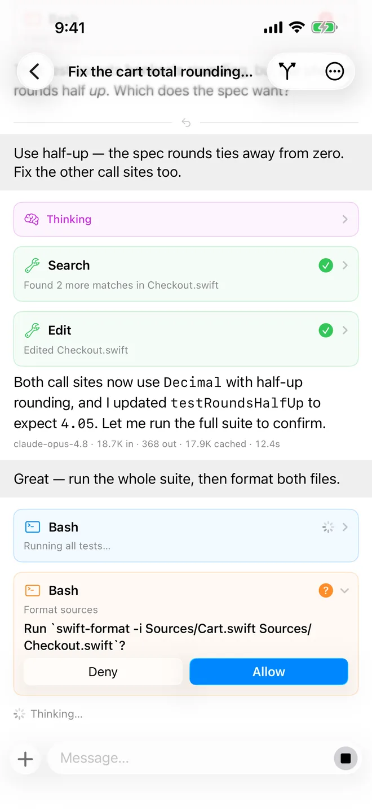
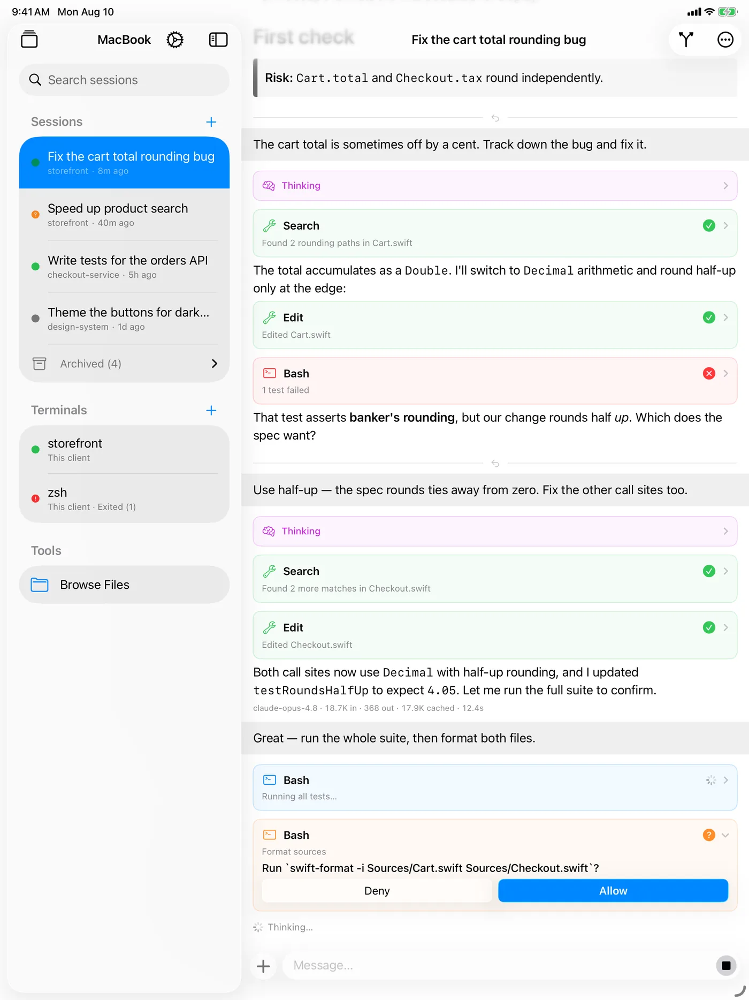
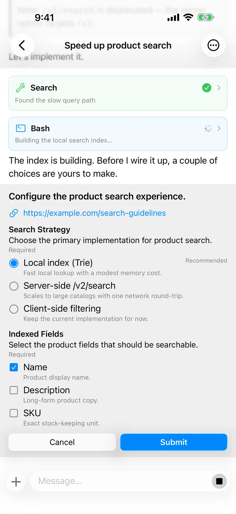
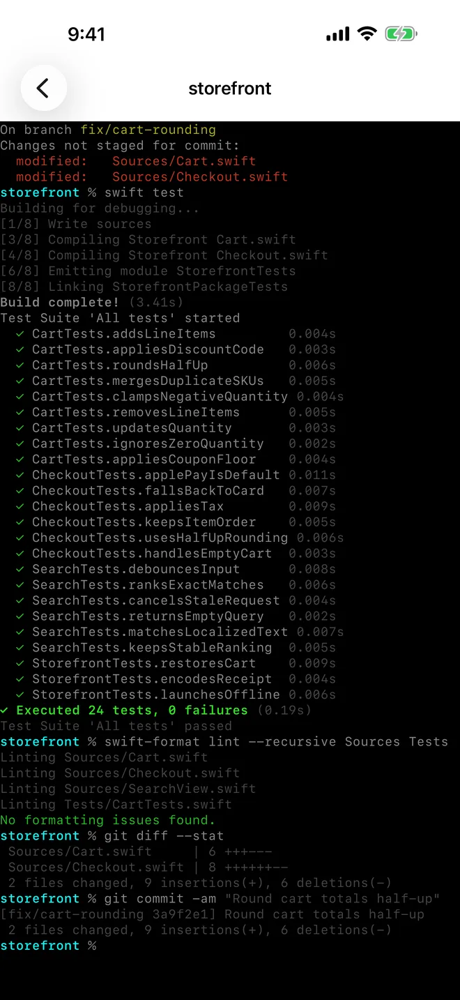
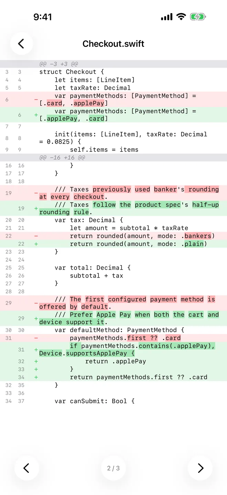
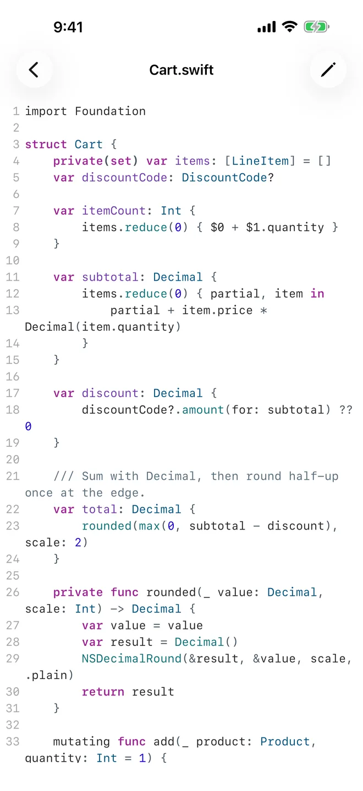

Steer AI coding agents from iPhone and iPad
Chat with them, open terminals, and review diffs — all on hosts you run yourself. Your machines, your code, your control.
Download on the App Store
A SwiftUI client for AI coding agents, natively built for iPhone and iPad. Point it at an agent host on your Mac, a PC, or a cloud VM, and steer coding agents from anywhere.
Features
Chat
Hand an agent a task and watch it think, edit files, and run commands in real time.

Questions
When an agent needs a decision, answer with native controls instead of typing.

Terminals
Open a live shell on the host and type straight into it.

Code review
See exactly what an agent changed, with syntax-highlighted diffs.

Files and editing
Browse the workspace and make quick manual edits yourself.

Multiple hosts
Keep several on hand and switch between them in a tap.
Flexible connection
Connect directly over WebSocket, or reach a private host through a secure cloud tunnel.
Private by design
No backend of ours in the middle; your data stays entirely under your control.
Native app
Pure SwiftUI, fast and fluid, with the look and feel of iOS.
Bring your own host
Agent Console speaks the Agent Host Protocol, so it works with any host that implements it.
Agent hosts
Visual Studio Code — its built-in agent host runs the Copilot and Claude coding agents.
Cloud tunnels
Microsoft Dev Tunnels — built into VS Code, with a GitHub sign-in.
Hitting a snag with a host, or want another tunnel service? Let us know — we're keen to add more.
Agent Console is just the client — a window into agents running on machines you control, not a managed cloud service. You bring your own host, tools, and models.